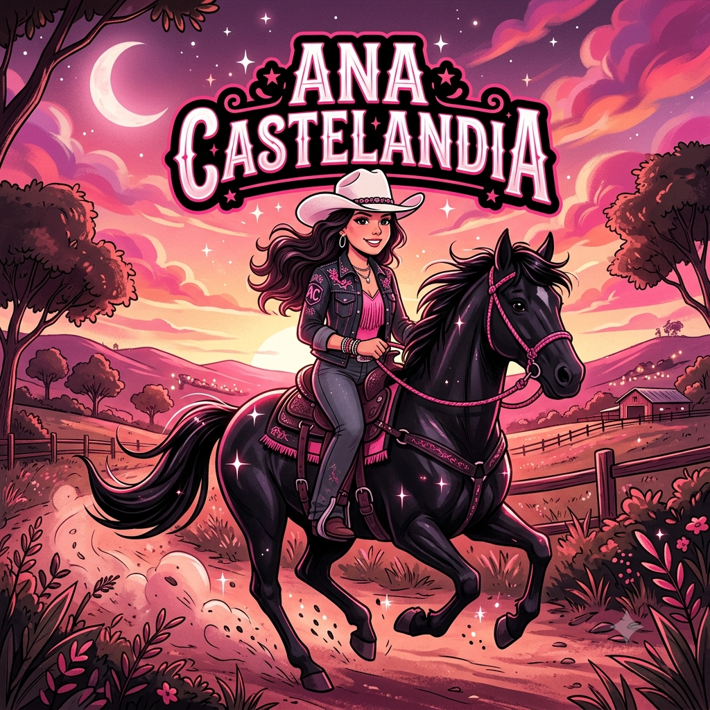

Meu primeiro post
class="artigo-autor">Por: Yasmin Zambotti
Boas-vindas ao meu novo blog! Aqui vou compartilhar assuntos noticias e novidaes sobre o mundo do agro e principalmente a ana castela.

class="artigo-autor">Por: Yasmin Zambotti
Boas-vindas ao meu novo blog! Aqui vou compartilhar assuntos noticias e novidaes sobre o mundo do agro e principalmente a ana castela.
Por: Yasmin Zambotti
Começouda carreira! antes da cantora Ana Castela estourar com o hit "boiadeira" em 2021, ela chegou a cursar faculdade de medicina, mas abandonou os estudos para focar na música após o sucesso.